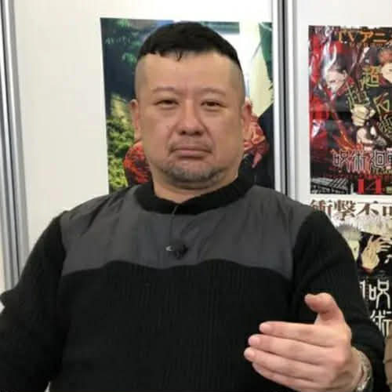

Jujutsu Kaisen
A supernatural action story following Yuji Itadori as he becomes involved in the dangerous world of Jujutsu Sorcerers and cursed spirits.

Manga Artist & Creator
Best known as the creator of Jujutsu Kaisen, a dark supernatural action series centered on curses, sorcery, and the struggle between good and evil.
← Back to CreatorsGege Akutami is a Japanese manga artist best known for creating Jujutsu Kaisen. The series combines supernatural horror, intense action, dark humor, and complex character relationships.
Jujutsu Kaisen began serialization in 2018 and became one of the most prominent modern shōnen manga and anime franchises.
A supernatural action story following Yuji Itadori as he becomes involved in the dangerous world of Jujutsu Sorcerers and cursed spirits.